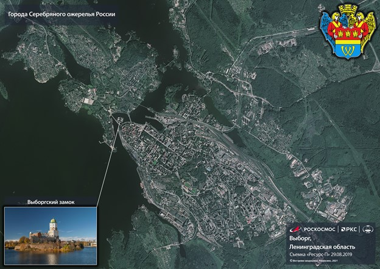

Вы́боргский за́мок — средневековый замок в Выборге, до XVII века служил резиденцией шведских наместников, управлявших Выборгским леном. Находится на небольшом острове в Финском заливе. Замок на воде является древнейшим из выборгских укреплений — он восходит к XIII веку. В России это один из немногочисленных сохранившихся памятников средневекового западноевропейского военного зодчества, в котором располагается государственный музей.
Часовая башня — башня в Выборге, бывшая колокольня Старого кафедрального собора, затем Часовая башня и одновременно сторожевая башня городской пожарной команды.
Круглая башня — средневековый памятник. Возвели ее в 1547–1550 годах по указанию короля Эрика XIV в рамках усиления обороны Выборгской крепости. Каменная артиллерийская башня рондельного типа, одна из двух сохранившихся боевых башен средневековой Выборгской крепости.
Эрмитаж-Выборг — филиал Государственного Эрмитажа и выставочный центр в Выборге (Ленинградская область), открывшийся в июне 2010 года. Здание построено в межвоенной Финляндии в стиле функционализм.